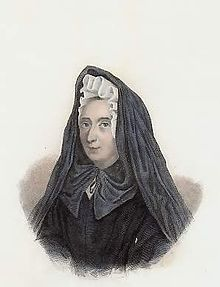

|
|
|
|
|
|
|
|
|
|
|
|

她受人逼害、侮辱、冤枉、辱骂、监禁，种种的苦害，都是逆来顺受，她不怨天尤人，反而说这是神许可的；是神所用的杖。她不但不恨仇敌，反而爱他们，常替他们祷告。
她被神剥夺，不只属世的东西都失去了，甚至属灵美好的恩赐也都失去了。并且她曾经历了主在十字架上被神弃绝的经历。虽然极其痛苦，可是结果却得着了一个最宝贝的东西——就是神的自己。她是充满了神的自己，她能说从前多年的苦楚，若比起现在在主里面一刻的快乐，真好像鸿毛之于泰山。
她的心极其单纯，像小孩子一样，只有一个爱神的心。此心非常坚强，正是“海枯石烂，此心不渝”。要她下地狱恐怕还容易，而不能叫她不爱神。她和神的交通是不断的，就是在梦中也继续为着神的缘故，甘心忍受最苦的十字架。只要神所许可的，她乐意忍受任何的十字架，不只不逃避，反而欢喜着迎接。
她一生的经历，几乎都是十字架的经历，各样的十字架都经历过。因为她爱神，所以也渴慕神所给她的十字架，(不爱十字架而想爱神是不可能的)。神也照着她的心愿，打发各种各样的难处来试炼她。
她是经过神雕刻最深的人，也是被神修理得最洁净的人，她真是神恩典的神迹，是神奇爱的标本。难怪有人说她生命的经历，或许要超过使徒的经历呢！在她身上可能已经应验了约翰福音十四章十二节的话：“要作比这更大的事”。哦！何等的奇妙！只要有人肯将自己一点不保留的献给主，绝对顺服神的旨意，神就要在他或她的身上作主，活出基督来。但愿一切的荣耀归给他！阿们。
盖恩夫人生在一六四八年四月，一个极其富有的家庭中。她母亲不喜欢女孩，就将她交给使女们看管，因着这些使女们的忽略，使她受了许多的苦。当她四岁时，她被带到一个修道院去生活，那时主就用非常的方法吸引她的心，使她的心极其爱主。她常巴望能为主的缘故作一个殉道者。并且热爱祷告的生活，享受和主中间交通的喜乐。这样的情形一直继续到她十岁的时候。在她十二岁的那年，她经历了一个转机：因为她的表哥要到中国去传道，路过她家。她表哥是一个非常圣洁、属灵的仆人，给她很大的影响，使她进入追求里面属灵生命的阶段。从那时起她一直在主面前追求，关上门一面读经，一面祷告。她学习了什么叫做悟性的祷告，学习了如何进入充满恩典的膏油和安息中，也学习了靠着和主的交通而得着的奥秘能力，胜过里面己的生命。这对一个十二岁的孩子来说真是一个奇迹。
她很早就进入家庭生活，十五岁时她父母把她嫁给一个比她大二十二岁的男子。从此以后，就开始了一段漫长而痛苦的生活。但这一切的苦只有带她更深的倾向神，经历神在她受苦最深时，她说：“在我里面，神很热切的吸引我去与他交通，但在外面，家人反对并禁止我过这样亲近神的生活。我的神哪，这一切只有使我更爱祢，他们竭力要停止我与祢的交通，但祢却吸引我到一种不可言喻的安静中；他们越用力要分开祢和我，但祢使我和祢的联合更加紧密。爱的火焰已经烧着了，所有使它消灭的能力，不过助它烧得更旺而已。所以祈祷的灵因着他们的禁止反而增加。愚人所学的反胜过博士们所学的，因为我所学的就是钉十字架的基督。”
后来主就一路下手剥夺她，她先丧失了最能了解她的父亲，接着她又丧失了她最亲爱的头生女儿，只留下一个叫她忧愁的儿子。以后经过了十三年的婚姻生活，终于她的丈夫也死去了。她就带着第二个新生的女儿和她婆婆住在一起。在那一段时间里有极大的试炼和十字架临到她，她和主中间的关系也被带到一个新的阶段。她说：“我每晚半夜总是醒过来，醒来的时候就说：我的神哪，我来为的是要照祢的旨意行。这时和主的交通是最纯洁最透切，最有能力的恩典的交通，是我以前未曾经历过的。我从半夜祷告起到早晨四点止，一直与主有最甘甜的交通。”
在她一生的后一半阶段中，她的逼迫和痛苦都是从天主教会来的。这一切的逼迫和痛苦真是超过一个人的力量所能忍受的。但就在这时主开始大大使用她，人接触她的时候，都能从她身上看见主荣耀的形象。她不常说话，但每次说话。她自己都惊讶在主话里面的能力，她如此帮助了许多人，也有多少神迹奇事从她发生。她说：“主指示我全世界没有一个人帮助我，都要发怒反对我；但在极深沉的安静中，他又对我说：我必得着无限属灵的子孙，是藉着十字架生出来的。”
在这一阶段她所作的许多事工中，我们举一个例子就知道她彰显主的度量到了何等惊人的地步。一次她住在一所修道院里，那时修道院中许多修道士的情形都是极其黑暗可怕的。她说：“神有一种恩赐给我，我觉得有使徒的情形，叫我能分辨那些来和我谈话的人。以致我所给他们的帮助都使他们惊奇。因为他们所得的，正是他们所需要的。从早晨六点起至晚上八点止，我一直讲到主。(在一个很短的时间中，修道院中两千僧侣全数都得救了)，人从各处来，有近处来的，有远处来的；有的是僧人、神甫，有的是世人，有童女、妇人、寡妇。神能使我不加思索地叫他们都得着奇妙的满意。他们各人里面的情形，没有一样能在我面前隐藏的。有一句话深印在我里面就是：‘要服事我的邻舍，就得有断头台上的牺牲。’那些说：‘奉主名来的，是应当称颂的人，’也就是以后说：‘除掉他！除掉他！’的那些人。”
最终天主教会捏造了许多罪名，把她下在监中。其中最具体的一个罪名是因着她所著的一本书《简易祈祷法》。但正当写这本书的人，因这本书下在监中的时候，这一本书在外面畅销，大大的流行，并且帮助了千千万万圣徒的属灵生命。
她写过不少的诗歌，其中有十几首，一直流传到如今。所有盖恩夫人所写的诗，都有一个特点：就是在苦难中对神的绝对顺服；在十字架下被引到神无比的大爱中；并在她每首诗歌里，都竭力劝勉人追求舍己，以致于达到无己的最高属灵境界中。
〖诗歌介绍〗
现在我们从她所写的诗歌，列出三首代表作介绍于后：
—、〈四周墙垣坚而固〉“StrongArethewallsAroundMe”
(一)四周墙垣坚而固，终日将我禁闭；
但那关闭我的人，不能使神远离。
监牢墙垣全变可爱，因为我神在此同在。
(二)关闭我者都知道，甚难使我孤单；
但是他们却不知，是他来狱慰安；
他使牢中黑暗变明，并用喜乐充满我灵。
(三)哦神，祢爱激动我，悲叹转为颂赞；
我从深处敬拜祢，不管时间地点；
或顺或逆，都无所要，只要和祢旨意相调。
(四)这个成为我宝贝，这个使我得益；
为我将祸变祝福，使我苦中欢喜；
不论何事都可临到，只要有神我就够了。
二、〈我是一只笼中小鸟〉“ALittleBirdIAm”
(一)我是一只笼中小鸟，远离天空旷阔野地；
是他将我安置于此，我愿向他歌颂不已；
如此被囚我甚欢欣，因这我神使祢称心。
(二)禁中我无他事可作，终日就是静中歌唱；
我所使之称心的神，也在倾听我的颂扬；
他捆绑了我的翅膀，却爱俯首听我歌唱。
(三)哦神！祢是有耳能听，祢也有心施爱赐福；
我的音调虽然粗陋，祢却毫不鄙弃厌恶；
因祢知道音调之弦，乃是甜美之爱所弹。
(四)这笼将我四面禁锢，我难外飞任意遨游；
我的翅膀虽被困住，我心我灵仍是自由。
监牢墙垣不能阻挡，心灵所有释放翱翔。
(五)我心超越监牢之闩，我灵腾飞何其自在！
向着心爱之主腾飞，他的旨意我所敬拜；
在祢坚定旨意之中，我灵得到自由欢腾。
三、〈长久陷入忧患苦痛〉“LongPlungedinSorrow”
(一)长久陷入忧患苦痛，我就退到祢的手中；
丝毫再无保留；
祢手擦干我的眼泪，使我哭脸满了光辉；
再无苦泪可流。
(二)再见！你这虚空欢娱，无味消遣儿戏乐趣，
对你我失口味。
真实快乐乃在十架，其他娱乐尽是虚假——
主是如此定规。
(三)哦十字架！才是福气；它的损失乃是利益；
其苦也是甘甜，
所有心思、心志、心情，在此全都得以炼净，
尝到真乐之满。
(四)苦中自爱难能得益，因它总求自己安逸。
除此它无福气。
真实之爱目的高尚，舍己乃是它所欣赏；
受苦是它所喜。
(五)我的选择和祢一样，哦！将圣火前来挑旺，
使之永焚无尽！
背起十架将祢跟随，因着祢爱时常赞美，
乃是我的福份。
http://www.bodani.cn/article/?bk=100859&v=6#138431
蓋恩夫人（Madame Jeanne Guyon 1648－1717 ）維基百科 [編輯]
| 蓋恩夫人 | |
|---|---|
|
 |
|
| 出生 | 1648年4月13日 法國奧爾良省蒙塔日 |
| 逝世 | 1717年6月9日（69歲） 法國布盧瓦 |
蓋恩夫人（Jeanne-Marie Bouvier de la Motte-Guyon，Madame Jeanne Guyon， 法語：[gɥi.jɔ̃]；1648年4月13日－1717年6月9日），17世紀法國內里生命派（奧秘派）和寂靜主義的代表人物，雖然她從來不稱自己為寂靜主義者。寂靜主義被羅馬天主教定為異端。她出版《簡易禱告法》（A Short and Very Easy Method of Prayer）一書後，從1695年至1703年被監禁。
從17世紀直到如今，一些基督徒直接或間接的受到她的影響，如中國的倪柝聲及他的小群運動，及後來的召會。持守加爾文主義的神學家，如19世紀的查爾斯·賀智在他的系統神學裡對寂靜主義進行了批判。[1]蓋恩夫人是天主教徒，她在《馨香的沒藥》裡披露的一些細節顯示她仍然遵守天主教的做法，如敬禮馬利亞等。
早年與婚姻[編輯]
1648年4月13日，蓋恩夫人生於法國蒙塔日，位於巴黎以南110公里，奧爾良以東70公里。父親克勞德·布維耶是蒙塔日的法庭檢察官。她自幼多病，敏感而細膩，耽誤了受教育。她的童年是在修道院和家中交替度過的，在十年內來回搬了九次。她的父母是非常虔誠的人，對她進行特別虔誠的訓練。她年輕時留下的其他重要印象來自閱讀聖方濟各·沙雷氏的作品，以及某些修女和她的老師。在她結婚之前，曾想成為一名修女，但這一願望並沒有持續太久[2]。
1664年，當她15歲時，在拒絕了許多其他提議後，她被迫嫁給蒙塔日一位38歲的富有的紳士蓋恩（Jacques Guyon）。在她結婚的十二年裡，蓋恩夫人在婆婆和女傭的手中遭受了可怕的痛苦。更令她痛苦的是，母親、兒子和同父異母的妹妹相繼去世。1672年7月，她的女兒和父親在幾天內相繼去世。但蓋恩夫人仍然相信上帝的完美計劃，她將在苦難中得到祝福。在1676年她丈夫去世前不久，她又生了一個兒子和女兒。在這次歷時12年的不幸婚姻中，蓋恩夫人生了五個孩子，其中三個活了下來，最後在28歲時成為寡婦[3]。
在她婚姻期間，蓋恩夫人從巴爾納伯修會（Barnabite）的弗朗索瓦·拉孔貝神父（Fr.François Lacombe）接觸到奧秘派，並受他教導[3]。
寡居[編輯]

{kind=link}
丈夫死後，蓋恩夫人最初作為一個富有的寡婦安靜地生活在蒙塔日。1679年，她與弗朗索瓦·拉孔貝重新建立了聯繫，他是薩伏依的托農萊班巴爾納伯修會的會長[4]。
在1680年經歷了第三次神秘的經歷後，蓋恩夫人感到自己被引導去日內瓦。日內瓦主教讓·德阿倫松·德亞歷克斯說服她用她的錢在薩沃伊的熱克斯為「新天主教徒」建一所房子，作為該地區新教徒改宗計劃的一部分。1680年7月，蓋恩夫人帶著小女兒離開蒙塔日，前往熱克斯[4]。
然而，這個計劃存在問題，蓋恩夫人與負責這所房子的修女發生了衝突。日內瓦主教派拉孔貝神父出面干預。這時，蓋恩夫人將內里生命介紹給拉孔貝。她的女兒進入托農萊班的 Ursuline 修道院領取年金，蓋恩夫人繼續在熱克斯工作，經歷了疾病和巨大的困難，包括家人的反對。她把兩個兒子的監護權交給了婆婆，放棄了大部分個人財產，只是為自己留了一大筆年金[4]。
天主教日內瓦教區主教最初很歡迎她，但是因為她的奧秘派觀點，要求她離開教區，同時驅逐了拉孔貝神父，他隨後去了天主教韋爾切利總教區[2]。
蓋恩夫人跟隨她的導師到都靈，然後返回法國，住在格勒諾布爾，在那裡更廣泛地傳播她的宗教信仰，出版
死亡和影響[編輯]
1704年，她的作品在荷蘭出版[5]，非常受歡迎。許多英國人和德國人去布盧瓦拜訪她，其中有約翰·韋特斯坦（Johann Wettstein）和福布斯勳爵（Lord Forbes）。她的餘生都在布盧瓦，與女兒，布盧瓦侯爵一起度過，最後在那裡去世，享年69歲。她從未打算脫離天主教會。
她發表的作品 Moyen Court和 Règles des associées à l'Enfance de Jésus,均於1688年列入《禁書目錄》。
一生的十字架經歷[編輯]
蓋恩夫人的一生受過許多苦難：幼年母親的虐待、丈夫的無情、婆婆的責罵、疾病纏累、天花毀容（23歲）、青年守寡、孩子夭折、受人侮辱。後半生，被天主教會冤枉，下在監中。她說：「主指示我全世界沒有一個人幫助我，都要發怒反對我；但是在極深沉的安靜中祂的話對我說，我必得無限量屬靈的子孫，是藉著十字架生出來的。」。家人禁止她過虔誠的生活。1676年丈夫去世。後來受到屬靈運動的影響，追求內里生命。因此倍受天主教會的逼迫。兩次被囚禁在巴士底獄，第一次八個月,第二次四年之久。以後又被放逐到羅亞爾河旁的布盧瓦，以終餘年。
1702年才從巴士底獄出來，年正54歲。由於在獄時倍受寒暑潮濕之故，以至身體極度軟弱，1717年6月9日去世，時年69歲。
但她在苦難中操練絕對順服神，破碎己的生命，拒絕自己，達到無己的屬靈境界；她從不怨天尤人，反而說這是神許可的雕刻和修理。她不但不恨仇敵，反而愛他們，常替他們禱告。
著作[編輯]
- 《馨香的沒藥》 （頁面存檔備份，存於網際網路檔案館）（在獄中寫的自傳） （《Sweet Smelling Myrrh》）
- 《由死亡得生命》
- 《簡易祈禱法》 （頁面存檔備份，存於網際網路檔案館）
- 《蓋恩夫人的信》
以上著作都已由俞成華（上海教會的長老，1901-1956）譯成中文。
- 《蓋恩夫人自傳全譯本》 （頁面存檔備份，存於網際網路檔案館）
這套書由驢駒於2011年12月翻譯出版。
https://zh.wikipedia.org/zh-tw/%E7%9B%96%E6%81%A9%E5%A4%AB%E4%BA%BA